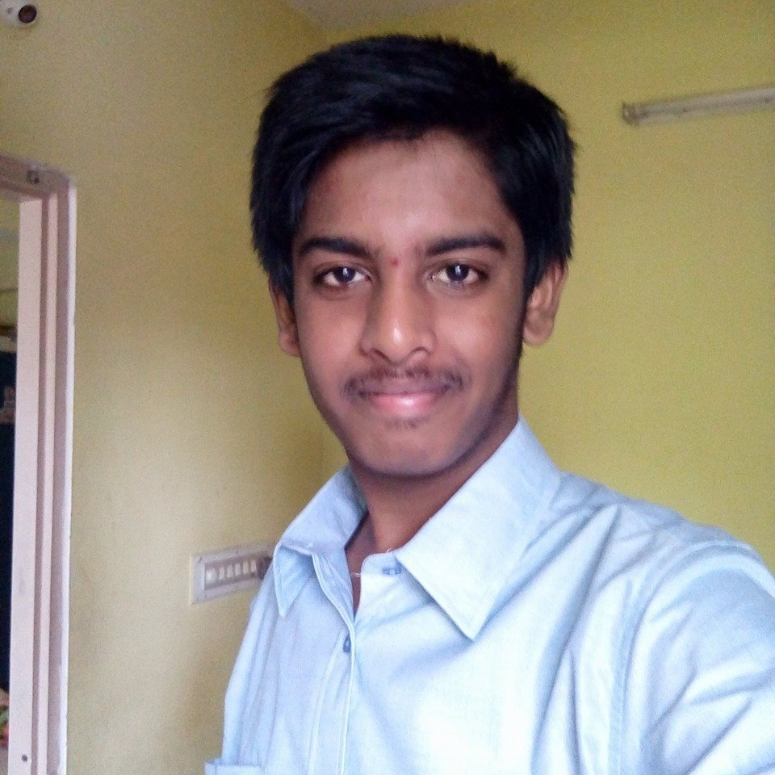

My Portfolio
A bit about myself

-
Name:
Suhas.K.S.
-
Institute:
National Institute of Technology Karnataka, Surathkal.
-
Branch:
Computer Science and Engineering.
Hobbies:
I prefer to describe myself as a Renaissance man. My hobbies include:
- Writing: I have read my fair share of literature. These inspire me to write my own stuff. I would call myself a decent writer.
- Music: I have delved into the darkest corners of music and discovered sonic gems that are unparalleled by the generic music that everyone listens today. These have inspired me to learn music theory and appreciate music in a deeper way.
My technical interests include:
- Linux: I'm a linux fanboy. I feel at home when I fire up a terminal on my Ubuntu machine. In fact, I've never touched the Gnome GUI that came along with Ubuntu. Except browsing, the terminal is the goto tool for everything. I was also successful in installing Arch linux on a virtual machine so I consider myself quite skilled when it comes to Linux.
- Hacking: This is pretty much the reason why I took computer science as my branch in engineering. There is something about being a hacker that supercedes everything else. My ambition is to become a hacker someday.
- Networking This is an extension of hacking. Networks are all around us. Others see communication. I see vulnerabilities. This is what attracts me. A web of vulnerabilities.
- Web Development This is an extension of Networking. I'm fascinated with the idea of building an attractive and functional website.
- Algorithmic Music and Sound Design: This interest arose due to my love of music. I always loved raw sounds with a lot of texture. I've tried designing sounds with languages like Csound and PureData. Haven't gone very far though.